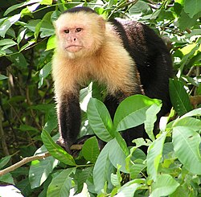
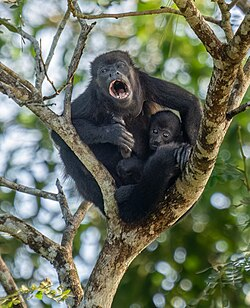
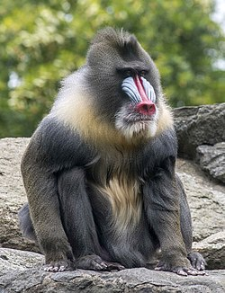
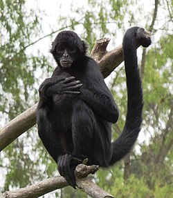
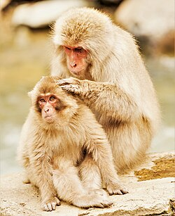

Capuchin monkey
The capuchin monkeys (/ˈkæpjʊ(t)ʃɪn/) are New World monkeys of the subfamily Cebinae. They are readily identified as the "organ grinder" monkey, and have been used in many movies and television shows. The range of capuchin monkeys includes some tropical forests in Central America and South America as far south as northern Argentina. In Central America, where they are called white-faced monkeys ("carablanca"), they usually occupy the wet lowland forests on the Caribbean coast of Costa Rica and Panama and deciduous dry forest on the Pacific coast.
Howler monkey
Howler monkeys (genus Alouatta, monotypic in subfamily Alouattinae) are the most widespread primate genus in the Neotropics and are among the largest of the platyrrhines along with the muriquis (Brachyteles), the spider monkeys (Ateles) and woolly monkeys (Lagotrix). The monkeys are native to South and Central American forests. They are famous for their howls, which can be heard from a distance through dense rain forest.[2] Fifteen species are recognized. Previously classified in the family Cebidae, they are now placed in the family Atelidae. They are primarily folivores but also significant frugivores, acting as seed dispersal agents through their digestive system and their locomotion. Threats include human predation, habitat destruction, illegal wildlife trade, and capture for pets or zoo animals.
Mandrill
The mandrill (Mandrillus sphinx) is a large Old World monkey native to west central Africa. It is one of the most colorful mammals in the world, with red and blue skin on its face and posterior. The species is sexually dimorphic, as males have a larger body, longer canine teeth and brighter coloring. Its closest living relative is the drill, with which it shares the genus Mandrillus. Both species were traditionally thought to be baboons, but further evidence has shown that they are more closely related to white-eyelid mangabeys. Mandrills mainly live in tropical rainforests but will also travel across savannas. They are active during the day and spend most of their time on the ground. Their preferred foods are fruit and seeds, but mandrills will consume leaves, piths, mushrooms, and animals from insects to juvenile bay duiker. Mandrills live in large, stable groups known as "hordes" which can number in the hundreds. Females form the core of these groups, while adult males are solitary and only reunite with the larger groups during the breeding season. Dominant males have the most vibrant colors and fattest flanks and rumps, and have the most success siring young. The mandrill is classified as vulnerable on the IUCN Red List. Its biggest threats are habitat destruction and hunting for bushmeat. Gabon is considered the stronghold for the species. Its habitat has declined in Cameroon and Equatorial Guinea, while its range in the Republic of the Congo is limited.
spider monkey
Spider monkeys are New World monkeys belonging to the genus Ateles, part of the subfamily Atelinae, family Atelidae. Like other atelines, they are found in tropical forests of Central and South America, from southern Mexico to Brazil. The genus consists of seven species, all of which are under threat; the brown spider monkey is critically endangered. They are also notable for their ability to be easily bred in captivity. Disproportionately long limbs and long prehensile tails make them one of the largest New World monkeys and give rise to their common name. Spider monkeys live in the upper layers of the rainforest and forage in the high canopy, from 25 to 30 m (82 to 98 ft).[2] They primarily eat fruits, but will also occasionally consume leaves, flowers, and insects.[2] Due to their large size, spider monkeys require large tracts of moist evergreen forests, and prefer undisturbed primary rainforest.[2] They are social animals and live in bands of up to 35 individuals, but will split up to forage during the day.[3] Recent meta-analyses on primate cognition studies indicated spider monkeys are the most intelligent New World monkeys.[4] They can produce a wide range of sounds and will "bark" when threatened; other vocalisations include a whinny similar to a horse and prolonged screams.[3] They are an important food source due to their large size, so are widely hunted by local human populations; they are also threatened by habitat destruction due to logging and land clearing.[3] Spider monkeys are susceptible to malaria and are used in laboratory studies of the disease.[3] The population trend for spider monkeys is decreasing; the IUCN Red List lists one species as vulnerable, five species as endangered and one species as critically endangered.
Japanese macaque
The Japanese macaque (Macaca fuscata), also known as the snow monkey, is a terrestrial Old World monkey species that is native to Japan. Colloquially, they are referred to as "snow monkeys" because some live in areas where snow covers the ground for months each year – no other non-human primate lives farther north, nor in a colder climate.[3] Individuals have brownish grey fur, pinkish-red faces, and short tails. Two subspecies are known.[4] In Japan, the species is known as Nihonzaru (ニホンザル, a combination of Nihon 日本 "Japan" + saru 猿 "monkey") to distinguish it from other primates, but the Japanese macaque is very familiar in Japan—as it is the only species of monkey in Japan—so when Japanese people simply say saru, they usually have the Japanese macaque in mind.